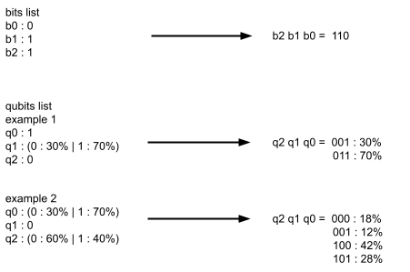

Prerequisites
Note
Qubits
What are Qubits?
The bit is binary, which means that it has only two possible states: on or off (0 or 1).
The qubit, on the other hand, carries much more information. As a bit, qubit can transmit a state being 0 or 1.
A qubit is based on elements acting according to the principle of Schrödinger's cat experiment. This experience explains that an element not observed can be in one state, in another state or in both states at the same time (then we say that the element is in superposition). It's only when the element is observed that it loses this state of superposition and “chooses” a definitive state according to certain probabilities.
Here, we exploit the superposition of qubit to obtain information about the probabilities of states they can be. So, a qubit, as long as it is not measured, carries the probabilities of being in one state or another (0 or 1).
Note
To resume, the state of a qubit can be 0, 1 or (0: x% and 1: y%) as long as it's not measured.
Then we can see qubits as vectors of probability [x% , y%], we call it “state vector”. This representation is very useful to calculate with qubits in superposition.
To be able to manipulate qubits, we prefer to use complex numbers to control their “phase” (concept that we will see later).
Using multiple qubits
Just like bits, qubits are combined to make a result. In the same way, we align qubits to obtain a sequence of 0 and 1. | However, as we have seen previously, qubits sometimes have undetermined states, so we obtain the probability to get multiple sequences.
In the same way that 3 bits can compose 23 = 8 possible sequences, 3 qubits can compose 8 possible sequences. | However bits are static, once in a state it composes only one possible sequence, while qubits are sometimes not determined, they can give several different results according to the probabilities of qubits.
{kind=link}
Note
Note that the order of a sequence starts with the last qubit and ends with the first, as for bits.
In example 1, we have 3 qubits: 1 is in superposition and 2 are fixed by initialization or by measurement (we will develop this point later). | We notice in result that we can obtain 2 possible sequences with different probabilities.
Quantum entanglement
The principle of entanglement is not very well understood by scientists. | However, we can retain that quantum entanglement allows two qubits to influence each other by sharing information regardless of their distance in space.
Important
In other words, once two qubits are entangled, they are dependent on each other.